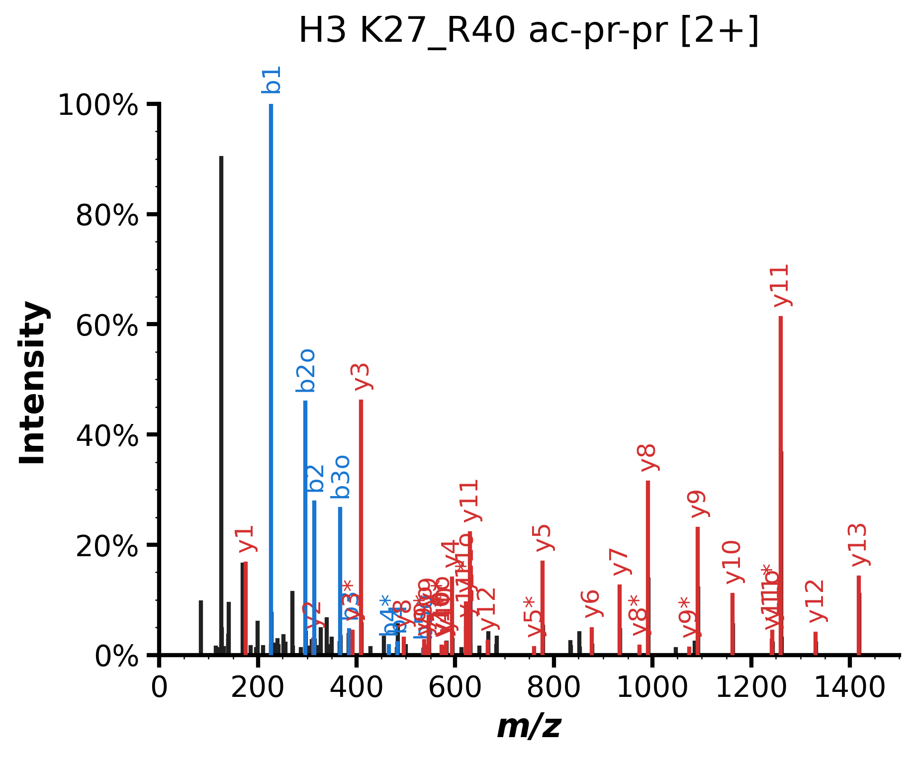

library(histonePTM)
library(dplyr)
library(readxl)histonePTM R package
A collection of functions to make your life easier.
1. PTMs
Rename PTM strings from Proline or Skyline to have a shorthanded representation.
1.1 ptm_beautify()
Proline
#PTM from Proline export, from 'modifications' column of sheet 'Best PSM from protein sets'.
PTM_Proline <- 'Propionyl (Any N-term); Propionyl (K1); Butyryl (K10); Butyryl (K11)'
ptm_beautify(PTM_Proline, lookup = histptm_lookup, software = 'Proline', residue = 'keep')
#> [1] "prNt-K1pr-K10bu-K11bu"
ptm_beautify(PTM_Proline, lookup = histptm_lookup, software = 'Proline', residue = 'remove')
#> [1] "prNt-pr-bu-bu"Skyline
Skyline PTMs are enclosed between square brackets (e.g. [+28.0313]) and sometimes they are rounded (e.g [+28]). We don’t support rounded numbers since some PTMs like [Ac] and [3Me] are rounded to the same number: +42. Use instead: ‘Peptide Modified Sequence Monoisotopic Masses’ column. Modified peptides in the ‘isolation list’ output file (‘Comment’ column) from Skyline always contains monoisotopic masses of PTMs as well.
PTM_Skyline <- "K[+124.05243]SVPSTGGVK[+56.026215]K[+56.026215]PHR"
ptm_beautify(PTM_Skyline, lookup = shorthistptm_mass, software = 'Skyline', residue = 'keep')
#> [1] "prNt-KcrSVPSTGGVKprKprPHR"
ptm_beautify(PTM_Skyline, lookup = shorthistptm_mass, software = 'Skyline', residue = 'remove')
#> [1] "prNt-cr-pr-pr"1.2 misc_clearLabeling
Remove the chemical labelling like propionyl or TMA which are not biologically relevant.
misc_clearLabeling("prNt-cr-pr-pr")
#> [1] "cr-un-un"1.3 ptm_toProForma()
Convert PTM string to ProForma ProForma (Proteoform and Peptidoform Notation)
histonePTM::ptm_toProForma(seq = "KSAPATGGVKKPHR",
mod = "Propionyl (Any N-term); Lactyl (K1); Dimethyl (K10); Propionyl (K11)")
#> [1] [+56.026]-K[+72.0211]SAPATGGVK[+28.0313]K[+56.026]PHR
ptm_toProForma(seq = "KSAPATGGVKKPHR",
mod = "TMAyl_correct (Any N-term); Butyryl (K1); Trimethyl (K10); Propionyl (K11)")
#> [1] [+84.057515]-K[+70.0418]SAPATGGVK[+42.0469]K[+56.026]PHR
ptm_toProForma( seq = "KQLATKVAR",
mod = "Propionyl (Any N-term); Propionyl (K1); Propionyl (K6)")
#> [1] [+56.026]-K[+56.026]QLATK[+56.026]VAR1.4 ptm_labelingAssessment()
Lysine derivatization can go rogue and can label other residues such as S, T, and Y. When using propionic anhydride, this is called ’ Overpropionylation’. Hydroxylamine is used to remove this adventitous labeling, so-called “reverse propionylation’. This function help for a quick visual review to see if overpropionylation is limited or enormous.
This for sure assume that the database search results are ran with Propionyl (STY) or any other labeling modification is selected.
df_label <- readxl::read_excel(path = 'labeling_comparison.xlsx',
sheet = 'Best PSM from protein sets')
ptm_labelingAssessment(df = df_label,
seq_col = sequence,
seq = 'KSAP.TGGVKKPHR',
ptm_col = modifications ,
int_col = dplyr::starts_with('abundance_'))['plot']
#> $plot
3.Plots
It generates fragment b and y fragment ions and draws annotated spectrum. This function relies on the spectrum_utils pyhton package.
3.1 plot_annotateSpectrum()
plot_annotateSpectrum(
Profrma_peptide = "K[+98.03678]SAPATGGVK[+56.02622]K[+56.02622]PHR",
prec_mz = 822.465,
prec_z = 2,
mz = scan15338$mz,
intensity = scan15338$intensity,
title= "H3 K27_R40 ac-pr-pr [2+]",
output_plot_name = "myplot.png")
#> Plot saved as 'myplot.png'
3.2 plot_scheduledPRM()
It counts and plots the number of precursors monitored per time unit in scheduled PRM experiment. It takes a list of m/z and RT as input as well as the retention time window size and peak width.
peptides_df <- data.frame(
moz= c(553.9903,830.4623,844.4781,549.3170,
837.4703,822.4650,836.4807,543.9861,
548.6583,829.4728,844.4781,858.4938,
558.6614,563.3330,851.4865,836.4807,
850.4963,553.3290,558.0017,843.4885,
487.2567,644.8226,683.8279,547.2980,
669.8381,699.3384,726.8357,622.8535,
776.9298),
rt= c(26.79,30.15,36.62,23.51,32.60,
31.58,37.41,23.94,23.83,33.38,
35.11,41.70,28.49,28.32,37.64,
40.43,46.31,33.47,33.31,42.83,
12.22,23.02,27.85,31.76,34.15,
40.01,44.72,52.09,62.64)
)
plot_scheduledPRM(df = peptides_df,
rt_col = rt,
mz_col = moz,
rt_window = c(3, 5),
peak_width = 0.3,
save_plot = FALSE)
3.3 plot_scheduledPRMranges()
A plot as above, but shows the the rt range of each m/z allowing visually to see how many concurrent precursor are overlapping at a certain time point.
df <- readr::read_csv('isolation_list.csv', show_col_types = FALSE)
plot_schdueldPRMranges(df = df,
tr_start = `Start [min]`,
tr_end = `End [min]`,
y_axis = `Mass [m/z]`,
label = `Mass [m/z]`,
save_plot = FALSE )
#> Warning in ggplot2::geom_text(ggplot2::aes(label = round({: Ignoring unknown
#> parameters: `face`
3.4 plot_mirrorSpectra()
It mirrors two spectra, It takes as input m/z and intensity of each fragment ion. Another necessary column to provide is the grouping_col that contain the source of each fragment ion. The those tags should be specifified in top_spec and bottom_spec. The function does not have an aption to annotated the spectra.
scanraw <- mgf_extractScan(mgf_file = 'raw.mgf', scan = 8730)
scanprocessed <- mgf_extractScan(mgf_file = 'SN_MH.mgf', scan = 8730)
df_mirror <- bind_rows(scanraw, scanprocessed)
plot_mirrorSpectra(data = df_mirror,
mz_col = mz,
intensity_col = intensity,
grouping_col = mgf,
top_spec = "SN_MH",
bottom_spec = "raw",
title = "")
3.5 plot_H3vsH33()
A plot that shows relative abundance of canonical H3 versus H3.3 based on H3 K27-R40 peptidoforms.
df_H3 <- readxl::read_excel(path = '20231102_H3_STR_SUM.xlsx',
sheet = 'Best PSM from protein sets')
plot_H3vsH33(df = df_H3, seq_col = sequence, seq_ptm_col = modifications, int_col = starts_with('abundance_'))
3.6 plot_jitterbarIntvsPTM()
A bar plot with scattered points showing the mean/median of the measurement of each condition.
df_K9K14_long <- readxl::read_excel(path = 'K9K14_long.xlsx')
plot_jitterbarIntvsPTM(dataset = df_K9K14_long,
x_axis = PTM,
y_axis = intensity,
condition = Condition,
id_col = 'H3 (K9_K14)')
#> Plotting: H3 (K9_K14)
3.7 plot_intDensity()
df <- read_xlsx(path = 'K9K14.xlsx')
plot_intDensity(df = df, int_col = dplyr::starts_with("abundance_"))
4.Quantification
4.1 quant_relIntensity()
Calculates the relative intensity of each peptide in each sample based on the following equation: .
df_K9K14 <- readxl::read_excel(path = 'K9K14.xlsx')
df_K9K14_norm <- quant_relIntensity(df = df_K9K14,
select_cols = starts_with('abundance_'),
grouping_var = sequence)
#before normalization
df_K9K14 |> select(starts_with('abundance_')) |> head()
#> # A tibble: 6 × 10
#> abundance_F173186 abundance_F173188 abundance_F173189 abundance_F173192
#> <dbl> <dbl> <dbl> <dbl>
#> 1 475453472 514254080 958833792 182273696
#> 2 38940812 43781780 90300080 57599136
#> 3 1124633344 1632991360 1767608320 1452094720
#> 4 75190408 77742064 233615456 21107264
#> 5 366894. 611339. 1479332. 653948.
#> 6 775680448 1144565888 1296215680 1139372160
#> # ℹ 6 more variables: abundance_F173193 <dbl>, abundance_F173194 <dbl>,
#> # abundance_F173191 <dbl>, abundance_F173187 <dbl>, abundance_F173190 <dbl>,
#> # abundance_F173195 <dbl>
#after normalization
df_K9K14_norm |> select(starts_with('abundance_')) |> head()
#> # A tibble: 6 × 10
#> abundance_F173186 abundance_F173188 abundance_F173189 abundance_F173192
#> <dbl> <dbl> <dbl> <dbl>
#> 1 0.129 0.112 0.156 0.0445
#> 2 0.0106 0.00952 0.0147 0.0141
#> 3 0.306 0.355 0.287 0.354
#> 4 0.0204 0.0169 0.0380 0.00515
#> 5 0.0000998 0.000133 0.000240 0.000160
#> 6 0.211 0.249 0.211 0.278
#> # ℹ 6 more variables: abundance_F173193 <dbl>, abundance_F173194 <dbl>,
#> # abundance_F173191 <dbl>, abundance_F173187 <dbl>, abundance_F173190 <dbl>,
#> # abundance_F173195 <dbl>5.Spectral Library
5.1 blib_seamlessIDswap()
When building a spectral library, Skyline can create two libraries. The main *.blib library and the second *_redundant.blib. In histones, some times the best representative spectrum could be present in the redundant library not in the main one. To keep everything neat, this function takes the identification from the redundant library and place it in the main library and place the main identification in the redundant library. To confirm the successful switch, the new identification will be highlighted in red and the other will turn black.
#blib_seamlessIDswap(db_main = , db_redundant = , rt = , mz = , tol = , file = )6.Sequence Organization & Manipulation
6.1 seq_AAcountplot()
Count the occurrences of a residue in a sequence and compare it with other sequences.
H3_seq <- "ARTKQTARKSTGGKAPRKQLATKAARKSAPATGGVKKPHRYRPGTVALREIRRYQKSTELLIRKLPFQRLVREIAQDFKTDLRFQSSAVMALQEACEAYLVGLFEDTNLCAIHAKRVTIMPKDIQLARRIRGERA"
H4_seq <- "SGRGKGGKGLGKGGAKRHRKVLRDNIQGITKPAIRRLARRGGVKRISGLIYEETRGVLKVFLENVIRDAVTYTEHAKRKTVTAMDVVYALKRQGRTLYGFGG"
seq_AAcountplot(H3_seq, H4_seq, plot = TRUE)
#> # A tibble: 37 × 3
#> seq a.a relative_percent
#> <chr> <chr> <dbl>
#> 1 H3_seq A 13
#> 2 H3_seq R 13
#> 3 H3_seq T 7
#> 4 H3_seq K 10
#> 5 H3_seq Q 6
#> 6 H3_seq S 4
#> 7 H3_seq G 5
#> 8 H3_seq P 4
#> 9 H3_seq L 9
#> 10 H3_seq V 4
#> # ℹ 27 more rowsseq_getHistPeptide()
df_new <- seq_getHistPeptide(df = df_H3, seq_col = sequence, histoneProtein = "H4")
unique(df_new$sequence)
#> [1] "ISGLIYEETR" "DAVTYTEHAKR" "DNIQGITKPAIR" "GKGGKGLGKGGAKR"
#> [5] "KTVTAMDVVYALKR"7.Scraping Online Data
7.1 litReview()
A quick literature review from PubMed
litReview(start = 2023, end = 2024, term = "Tiziana Bonaldi[au]")
#> [[1]]
#> # A tibble: 21 × 3
#> year id title
#> <int> <chr> <chr>
#> 1 2023 38124114 A comprehensive characterisation of phaeochromocytoma and par…
#> 2 2023 38102575 Multi-omics integrative modelling for stereotactic body radio…
#> 3 2023 38028201 Unveiling the role of PUS7-mediated pseudouridylation in host…
#> 4 2023 38019906 GTF2I dosage regulates neuronal differentiation and social be…
#> 5 2023 37727062 Proteomics contributions to epigenetic drug discovery.
#> 6 2023 37665465 Mass Spectrometry-Based Analysis of Histone Posttranslational…
#> 7 2023 37294917 Lipid nanoparticles allow efficient and harmless ex vivo gene…
#> 8 2023 37146898 Detection and quantification of the histone code in the funga…
#> 9 2023 36810679 Methylation of CENP-A/Cse4 on arginine 143 and lysine 131 reg…
#> 10 2023 36697763 A truncated and catalytically inactive isoform of KDM5B histo…
#> # ℹ 11 more rows
#>
#> [[2]]
#>
#> 2023 2024
#> 14 77.2 ptm_Uniprot()
It gets PTMs identified by proteomics from Uniprot
accession <- 'P42858' #HTT protein
df <- ptm_Uniprot(Uniprot_accession = accession)
columns_to_show <- c('name', 'type','position', 'peptide', 'PEP', 'sources')
df |> dplyr::select(all_of(columns_to_show))
#> # A tibble: 24 × 6
#> name type position peptide PEP sources
#> <chr> <chr> <int> <chr> <chr> <chr>
#> 1 Phosphorylation PROTEOMICS_PTM 4 HSLSSTK 4.59… PRIDE
#> 2 Phosphorylation PROTEOMICS_PTM 15 DEISGELAASSGVSTPGSAGHD… 1.41… PRIDE
#> 3 Phosphorylation PROTEOMICS_PTM 3 AISEEEEEVDPNTQNPK 8.97… PRIDE
#> 4 Phosphorylation PROTEOMICS_PTM 12 NMSHCRQPSDSSVDK 0.00… PRIDE
#> 5 Phosphorylation PROTEOMICS_PTM 1 SRSGSIVELIAGGGSSCSPVLS… 1.32… PRIDE
#> 6 Phosphorylation PROTEOMICS_PTM 26 TPPPELLQTLTAVGGIGQLTAA… 1.39… PRIDE
#> 7 Phosphorylation PROTEOMICS_PTM 9 EKEPGEQASVPLSPKK 2.97… PRIDE
#> 8 Phosphorylation PROTEOMICS_PTM 4 EKVSPGRTSDPNPAAPDSESVI… 1.98… PRIDE
#> 9 Phosphorylation PROTEOMICS_PTM 3 LLSPQMSGEEEDSDLAAK 1.60… PRIDE
#> 10 Phosphorylation PROTEOMICS_PTM 7 LLSPQMSGEEEDSDLAAK 1.60… PRIDE
#> # ℹ 14 more rows